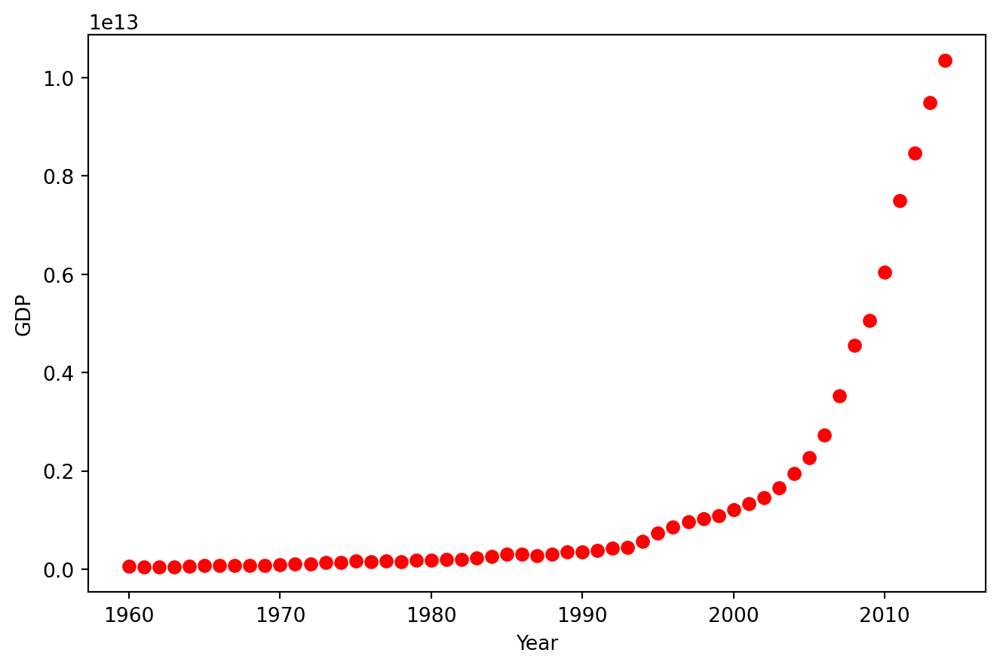

import numpy as np
import matplotlib.pyplot as plt
%matplotlib inline
import pandas as pd
from scipy.optimize import curve_fitNon-Linear Progression
This blog showcases the process of loading, visualizing, and analyzing data in Python. It also illustrates how to fit a model to the data and evaluate its performance. The sigmoid function is considered a suitable choice for this dataset, particularly for capturing the rapid growth observed in China’s GDP over time. The script further provides insights into assessing the model fit through common metrics such as mean absolute error, mean squared error, and the R2 score.
Importing Libraries
The script initiates by importing essential libraries for various tasks. NumPy is utilized for numerical operations, Matplotlib.pyplot for plotting data, Pandas for data manipulation and analysis, and scipy. optimize for curve fitting. These libraries collectively provide the functionality required for numerical operations, visualization, data analysis, and curve fitting in the subsequent sections of the script.
Exploring Dataset and Visualization
The script begins by reading a CSV file containing China’s GDP data into a pandas DataFrame. Subsequently, it displays the first 10 rows of the DataFrame. Following this, the script creates a plot of the GDP against the year. The ‘ro’ argument in the plot function specifies that the data points are represented as red circles in the plot.
df = pd.read_csv("china_gdp.csv")
df.head(10)| Year | Value | |
|---|---|---|
| 0 | 1960 | 5.918412e+10 |
| 1 | 1961 | 4.955705e+10 |
| 2 | 1962 | 4.668518e+10 |
| 3 | 1963 | 5.009730e+10 |
| 4 | 1964 | 5.906225e+10 |
| 5 | 1965 | 6.970915e+10 |
| 6 | 1966 | 7.587943e+10 |
| 7 | 1967 | 7.205703e+10 |
| 8 | 1968 | 6.999350e+10 |
| 9 | 1969 | 7.871882e+10 |
plt.figure(figsize=(8,5))
x_data, y_data = (df["Year"].values, df["Value"].values)
plt.plot(x_data, y_data, 'ro')
plt.ylabel('GDP')
plt.xlabel('Year')
plt.show()
Defining Model and Normalizing Data
The script proceeds to define a sigmoid function, which will be later fitted to the data. A sigmoid function is characterized by an S-shaped curve and is often employed to model growth trends. Following this, the script scales both the x and y data to fall within the range of 0 and 1. This scaling process is employed to enhance the stability and efficiency of the optimization process.
X = np.arange(-5,5.0, 0.1)
Y = 1.0 / (1.0 + np.exp(-X))
plt.plot(X,Y)
plt.ylabel('Dependent Variable')
plt.xlabel('Indepdendent Variable')
plt.show()
def sigmoid(x, Beta_1, Beta_2):
y = 1 / (1 + np.exp(-Beta_1*(x-Beta_2)))
return y
beta_1 = 0.10
beta_2 = 1990.0
#logistic function
Y_pred = sigmoid(x_data, beta_1 , beta_2)
#plot initial prediction against datapoints
plt.plot(x_data, Y_pred*15000000000000.)
plt.plot(x_data, y_data, 'ro')
xdata =x_data/max(x_data)
ydata =y_data/max(y_data)
from scipy.optimize import curve_fit
popt, pcov = curve_fit(sigmoid, xdata, ydata)
#print the final parameters
print(" beta_1 = %f, beta_2 = %f" % (popt[0], popt[1])) beta_1 = 690.451712, beta_2 = 0.997207Visualizing the Results
The script proceeds to plot the fitted sigmoid function alongside the original data. It further divides the data into a training set and a test set, fits the model to the training set, generates predictions for the test set, and subsequently calculates metrics such as mean absolute error, mean squared error, and the R2 score for the predictions. The curve_fit function from the scipy.optimize module is utilized to fit the sigmoid function to the data, and the optimal parameters are printed as part of the output.
x = np.linspace(1960, 2015, 55)
x = x/max(x)
plt.figure(figsize=(8,5))
y = sigmoid(x, *popt)
plt.plot(xdata, ydata, 'ro', label='data')
plt.plot(x,y, linewidth=3.0, label='fit')
plt.legend(loc='best')
plt.ylabel('GDP')
plt.xlabel('Year')
plt.show()msk = np.random.rand(len(df)) < 0.8
train_x = xdata[msk]
test_x = xdata[~msk]
train_y = ydata[msk]
test_y = ydata[~msk]
# build the model using train set
popt, pcov = curve_fit(sigmoid, train_x, train_y)
# predict using test set
y_hat = sigmoid(test_x, *popt)
# evaluation
print("Mean absolute error: %.2f" % np.mean(np.absolute(y_hat - test_y)))
print("Residual sum of squares (MSE): %.2f" % np.mean((y_hat - test_y) ** 2))
from sklearn.metrics import r2_score
print("R2-score: %.2f" % r2_score(y_hat , test_y) )Mean absolute error: 0.04
Residual sum of squares (MSE): 0.00
R2-score: 0.95Conclusion
In summary, this script provides a comprehensive demonstration of loading, visualizing, and analyzing data in Python. It guides through the process of fitting a model to the data and evaluating its performance using various metrics. The utilization of a sigmoid function, in particular, showcases its application for modeling growth trends. Overall, the script serves as a practical example of data analysis and modeling in a Python environment.